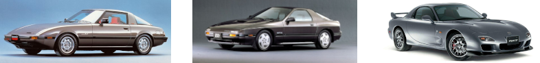

História
A história do RX-7 começa em 1961, quando a Mazda firmou contrato com a alemã NSU
para aprimorar o motor rotativo criado por Felix Wankel.
O conceito consiste em um rotor triangular que gira no interior de uma carcaça oval,
movimento contínuo e suave devido à ausência do sobe e desce presente nos motores a pistão.
A história do RX-7 começa em 1961, quando a Mazda firmou contrato com a alemã NSU
para aprimorar o motor rotativo criado por Felix Wankel.
Chamado Savanna RX-7 no Japão, ele foi apresentado em março de 1978.
Os 105 vc do motor 12A com dois rotores e 1,1 litros bastavam para velá-lo de 0 a 100 km/h em 9,5s.
A máxima de 190 km/h era favorecida pelo bom perfil aerodinâmico. O câmbio manual de quatro marchas era de série,
com
opção manual de cinco marchas ou automático de três.
Em 1983 foi adotado o motor 13B, com injeção eletrônica e 135 cv. Pouco depois, veio o Savanna RX-7 Turbo com 165 cv,
o
revitalizado motor 12A antecipou o nível de performance que estava por vir.
Em 1986 foi apresentada a segunda geração, nitidamente inspirada no Porsche 944,
foi desenvolvida em torno da preferências
do mercado norte-americano.
Nesse período, o RX-7 tornou-se consideravelmente mais pesado, mas incorporou avanços importantes como a caixa de direção
com pinhão e cremalheira e a suspensão traseira independente.
O motor era sempre o 13B, aspirado 146 cv ou turbo 182 cv. Ambos ficaram mais potentes após a reestilização de 1989
onde ganhou coletor de admissão variável para atingir 162 cv.
O mais belo RX-7 surgiu em 1992, com linhas fluidas e atemporais.
Sua maior novidade era o motor 13B-REW de 255 cv com
dois turbos sequenciais.
Devido ao alto consumo e às normas de emissões cada vez mais rígidas, o RX-7 deixou o mercado em 1996. Chegou até os 280 cv.
A produção foi encerrada em 2002, para tristeza dos fãs dos motores Wankel.
Ouça o som do motor rotativo do Mazda RX-7